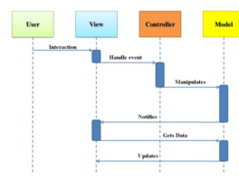
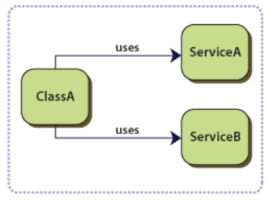

1: Introduction
Course Overview
Assessment
Overview of Course
1: HTML & CSS Revision
1.1: HTML Templates
1.2: CSS Frameworks
2: JavaScript Review
JS Introduction
Variables
Boolean Logic
Const, Let & Objects
Arrays: Basics
Array Methods
Array Iteration
Arrays of Strings
Arrays of Objects
ES Next
Lab-2.1 JS Intro
Lab-2.2 JS Basics
Javascript Basics
Javascript Arrays
Lab Preview
3: DOM & JQuery
JS Browser Tools
DOM
JQuery
Lab-3 JQuery
DOM & JQuery
4: Ajax & APIs
ES Next
Ajax Introduction
APIs in Ajax
APIs in Node
Lab-4.1 Github API
Lab-4.2-FoureSquare API
5: Hapi Applications
Node Essence
Node Context
Programming Node
Lab-5 Applications
6: Views
Variables & Objects Review
Hapi Building Blocks
Static Views
Templates
Lab-6 Views
7: Sessions
Lab 06 Exercises
HAPI Philosophy
Sessions
Sessions in Hapi
Modules
Lab-7 Sessions
8: Models
JS Arrays
Promises in Javascript
Introducing NoSql DBs
Setting Up Mongo
Accessing Mongo
Lab-8 Models
09: Validation
JS Functions
Joi Validation
Hapi Validation with Joi
Lab-9 Validation
10: Deployment
JS Scope
Callbacks & Promises
Node on Heroku
Lab-10 Deployment
11: Model Seeding
Relationships between Mongo Documents
Mongoose Seeding
Candidate Model
Lab-11 Seeding
12: APIs
APIs
Endpoints
Testing Endpoints
Lab-12 Apis
13: TDD
Test Driven Development
First Tests
Pragmatic Testing
TDD & APIs
Lab-13 Tdd
14: REST
HTTP Protocol
REST Endpoints
Lab-14 Rest
15: Aurelia Introduction
Aurelia Introduction
Aurelia First Steps
Lab-Aurelia 1
16: Aurelia View Models
UI Patterns
Imports, Decorators & DI
MVVM
Lab-Aurelia 2
17: Aurelia Routers
EventAggregator
Composition
Routers
Lab-Aurelia 3
Aurelia Lab 3 TS
18: Aurelia Rest Client
aurelia-client-http
DonationService
Lab-Aurelia 4
Lab-Aurelia 4 TS
19: Aurelia/Hapi JWT
JWT
Jwt in HAPI
Aurleia JWT
Lab-Hapi-JWT
Lab-Aurelia 5
Lab-Aurelia 5 TS
Building Modern Web Applications & Services
All slides's in Module
Course Overview
Assessment
Case Study
Templates
Deployment
Harp & Surge
Semantic-UI I
Semantic-UI II
Semantic-UI III
Semantic Part IV
JS Introduction
Variables
Boolean Logic
Const, Let & Objects
Arrays: Basics
Array Methods
Array Iteration
Arrays of Strings
Arrays of Objects
ES Next
JS Browser Tools
DOM
JQuery
ES Next
Ajax Introduction
APIs in Ajax
APIs in Node
Node Essence
Node Context
Programming Node
Variables & Objects Review
Hapi Building Blocks
Static Views
Templates
Lab 06 Exercises
HAPI Philosophy
Sessions
Sessions in Hapi
Modules
JS Arrays
Promises in Javascript
Introducing NoSql DBs
Setting Up Mongo
Accessing Mongo
JS Functions
Joi Validation
Hapi Validation with Joi
JS Scope
Callbacks & Promises
Node on Heroku
Relationships between Mongo Documents
Mongoose Seeding
Candidate Model
APIs
Endpoints
Testing Endpoints
Test Driven Development
First Tests
Pragmatic Testing
TDD & APIs
HTTP Protocol
REST Endpoints
Aurelia Introduction
Aurelia First Steps
UI Patterns

Imports, Decorators & DI

MVVM
EventAggregator
Composition
Routers
aurelia-client-http
DonationService
JWT
Jwt in HAPI
Aurleia JWT